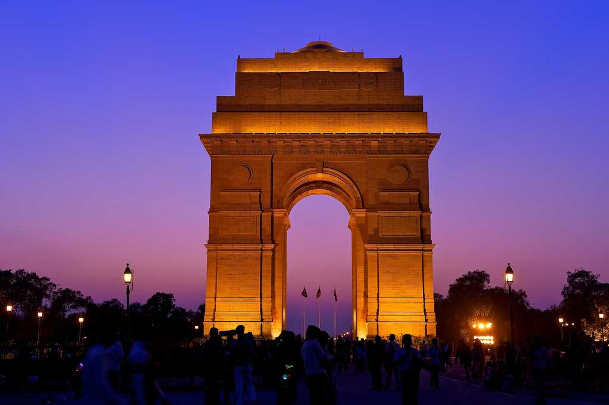
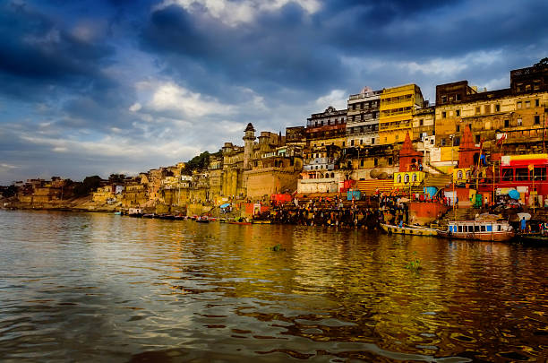
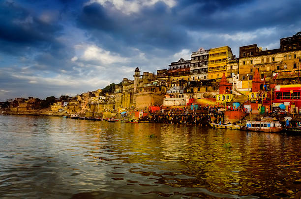
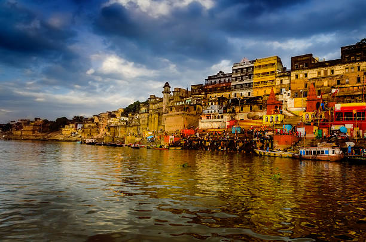
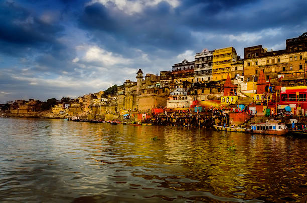

Tours and Travels !
 


The India Gate was part of the work of the Imperial War Graves Commission (IWGC), which came into existence in December 1917 under the British rule for building war graves and memorials to soldiers who were killed in the First World War[3] The foundation stone of the gate then called the All India War Memorial, was laid on 10 February 1921, at 16:30, by the visiting Duke of Connaught in a ceremony attended by Officers and Men of the British Indian Army, Imperial Service Troops, the Commander in Chief, and Chelmsford, the viceroy.[4] On the occasion, the viceroy is reported to have said, "The stirring tales of individual heroism, will live forever in the annals of this country", and that the memorial which was a tribute to the memory of heroes, "known and unknown", would inspire future generations to endure hardships with similar fortitude and "no less valour".[4] The Duke also read out a message by the King, which said, "On this spot, in the central vista of the Capital of India, there will stand a Memorial Archway, designed to keep", in the thoughts of future generations, "the glorious sacrifice of the officers and men of the British Indian Army who fought and fell". During the ceremony, the Deccan Horse, 3rd Sappers and Miners, 6th Jat Light Infantry, 34th Sikh Pioneers, 39th Garhwal Rifles, 59th Scinde Rifles (Frontier Force), 117th Mahrattas, and 5th Gurkha Rifles (Frontier Force), were honoured with the title of "Royal" in recognition of the distinguished services and gallantry of the British Indian Army during the Great War".[4]
The Taj Mahal incorporates and expands on design traditions of Indo-Islamic and earlier Mughal architecture. Specific inspiration came from successful Timurid and Mughal buildings including the Gur-e Amir (the tomb of Timur, progenitor of the Mughal dynasty, in Samarkand),[14] Humayun's Tomb which inspired the Charbagh gardens and hasht-behesht (architecture) plan of the site, Itmad-Ud-Daulah's Tomb (sometimes called the Baby Taj), and Shah Jahan's own Jama Masjid in Delhi. While earlier Mughal buildings were primarily constructed of red sandstone, Shah Jahan promoted the use of white marble inlaid with semi-precious stones. Buildings under his patronage reached new levels of refinement.[15]
Allahabad (About this soundpronunciation (help·info)), officially known as Prayagraj, also known as Ilahabad, is a metropolis in the Indian state of Uttar Pradesh.[6][7][8][9] It is the administrative headquarters of the Allahabad district—the most populous district in the state and 13th most populous district in India—and the Allahabad division. The city is the judicial capital of Uttar Pradesh with the Allahabad High Court being the highest judicial body in the state. As of 2011, Allahabad is the seventh most populous city in the state, thirteenth in Northern India and thirty-sixth in India, with an estimated population of 1.53 million in the city.[3][10][11][12] In 2011 it was ranked the world's 40th fastest-growing city.[13][14] Allahabad, in 2016, was also ranked the third most liveable urban agglomeration in the state (after Noida and Lucknow) and sixteenth in the country.[15] Hindi is the most widely spoken language in the city. Allahabad lies close to Triveni Sangam, the "three-river confluence" of the Ganges, Yamuna and Sarasvati rivers.[1] The city plays a prominent role and is referenced in both Vedic and Hindu scriptures. The city finds its earliest reference as one of the world's oldest known cities in Vedic texts and has been venerated as the holy city of Prayaga in the ancient Vedas. Allahabad was also known as Kosambi in the late Vedic period, named by the Kuru rulers of Hastinapur, who developed it as their capital. Kosambi was one of the greatest cities in India from the late Vedic period until the end of the Maurya Empire, with occupation continuing until the Gupta Empire. Since then, the city has been a political, cultural and administrative centre of the Doab region. In the early 17th century, Allahabad was a provincial capital in the Mughal Empire under the reign of Jahangir.[16] Akbarnama mentions that the Mughal emperor Akbar founded a great city in Allahabad. 'Abd al-Qadir Bada'uni and Nizamuddin Ahmad mention that Akbar laid the foundations of an imperial city there which was called Ilahabas or Ilahabad.[17][18] He was said to be impressed by its strategic location and built a fort there, later renaming it Ilahabas by 1584, which was changed to Allahabad by Shah Jahan.[vague][19] In 1580, Akbar created the "Subah of Ilahabas" with Allahabad as its capital.[20] In mid-1600, Jahangir made an abortive attempt to seize Agra's treasury and came to Allahabad, seizing its treasury and setting himself up as a virtually independent ruler.[21] He was, however, reconciled with Akbar and returned to Allahabad where he stayed before returning to the royal court in 1604.[22]